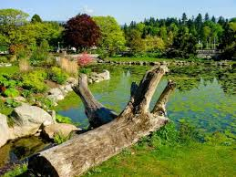
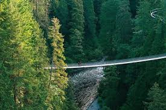
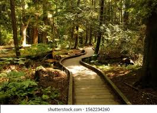
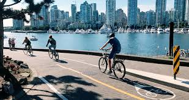
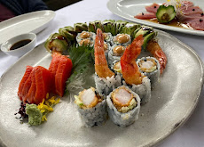
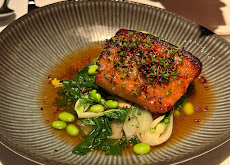

Vancouver é referência mundial em sustentabilidade. A cidade possui grandes áreas naturais, transporte sustentável e políticas ambientais voltadas para redução de carbono.

Stanley Park, um dos parques urbanos mais famosos do mundo.

Capilano Suspension Bridge com vista para florestas naturais.

Pacific Spirit Regional Park com trilhas ecológicas.

False Creek Greenway com mobilidade sustentável.

Restaurantes com frutos do mar sustentáveis.

Culinária orgânica com ingredientes locais.